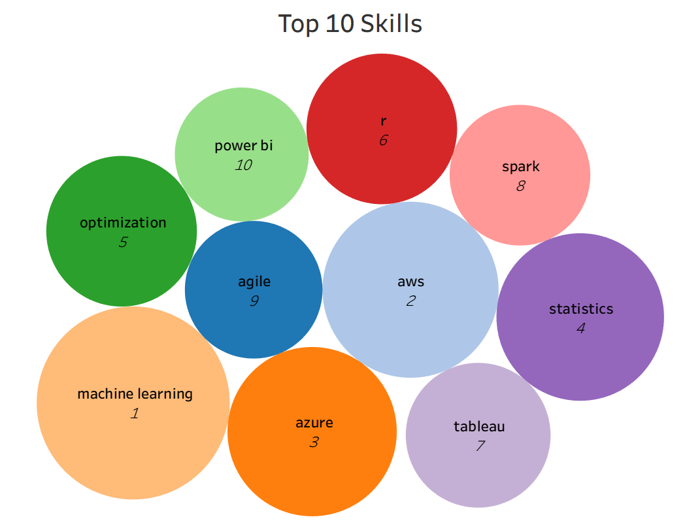
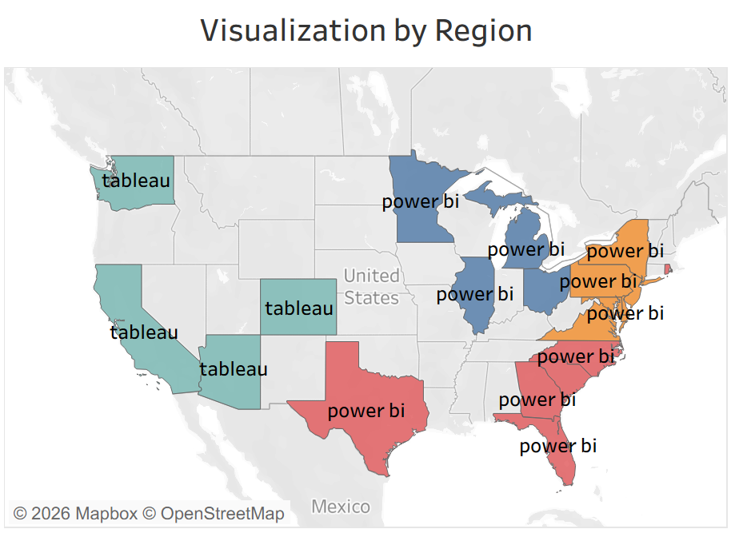
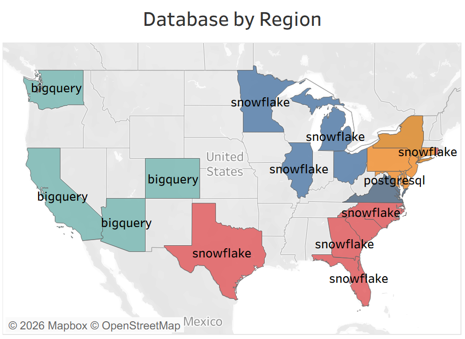
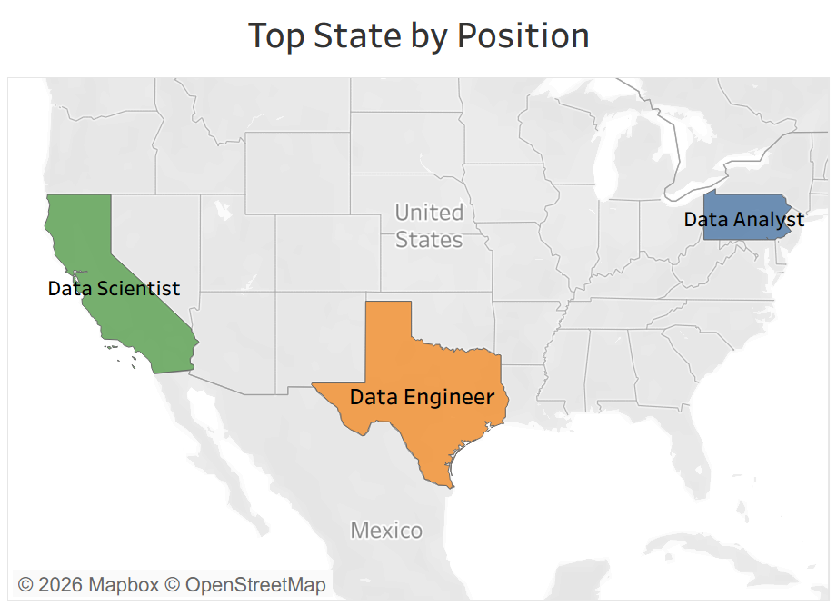
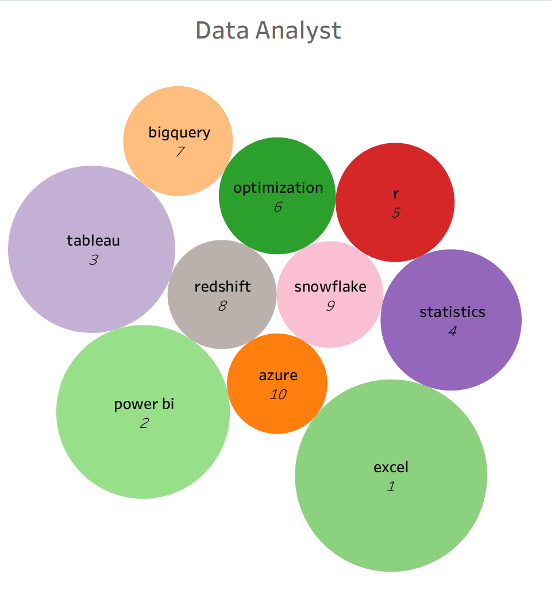
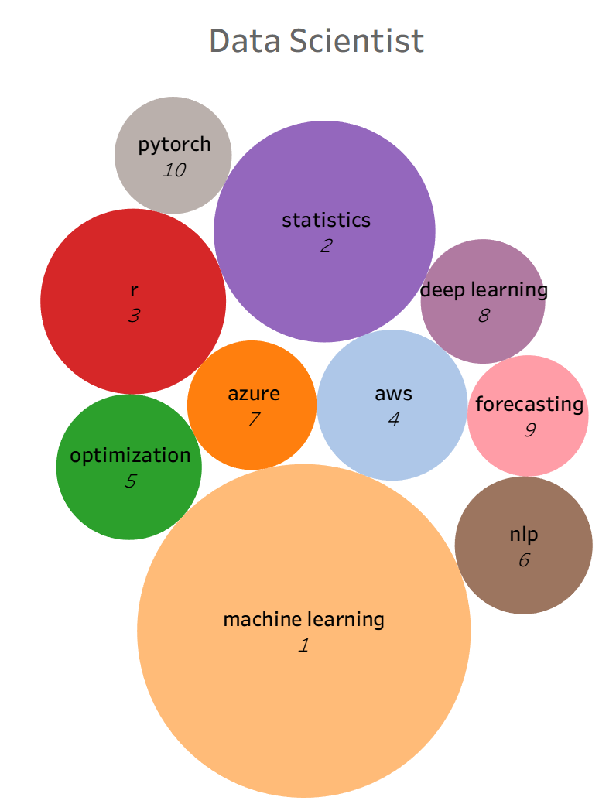
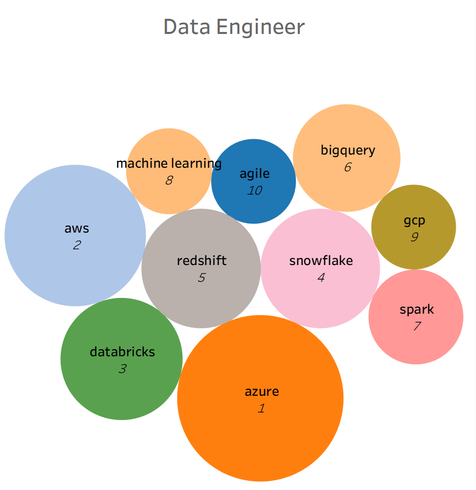

If you are trying to break into data science, the advice you get is often the same everywhere: learn Python, learn SQL, maybe pick up some cloud tools. But is that really true across the entire country? Does it matter whether you are job hunting in San Francisco versus Chicago versus New York?
This project set out to answer that question. By collecting and analyzing 3,900 real job postings from across the United States, I built a regional picture of what employers actually ask for when they hire Data Analysts, Data Scientists, and Data Engineers. The findings reveal that location matters more than most people think.
Job seekers and students are often given generic career advice that ignores regional variation. A Data Analyst role in New York looks very different from one in Dallas or Seattle. The tools, the industries, and the expectations all shift depending on where the job is located. Without a data-driven view of this, candidates risk investing time in skills that are not particularly valued in their target market.
This project aimed to surface those regional differences and give job seekers, students, and educators a clearer picture of the data job landscape across the U.S.
Job postings were collected using the JSearch API, which aggregates real-time listings from LinkedIn, Indeed, Glassdoor, ZipRecruiter, and Google for Jobs. Python scripts were developed to systematically query the API for three target roles across major cities in four U.S. regions.
Each API call retrieved multiple postings per role per city, resulting in a dataset of 3,900 unique job postings covering 335 cities across 23 states. Raw API responses were stored in JSON format to allow for flexible reprocessing.
The project follows a modern big data pipeline built on cloud tools and distributed computing. The architecture uses a three-layer data model:
Raw JSON responses from the JSearch API, stored with metadata and ingestion timestamps. No transformations applied at this stage.
Cleaned and structured job data. PySpark was used for data cleaning, normalization, and NLP-based skill extraction from raw job description text.
Analytics-ready fact and dimension tables in Snowflake, including job posting facts, regional dimensions, skills dimensions, and time dimensions.
PySpark handled all data processing and transformation including cleaning, normalization, and natural language processing to identify and extract technical skills from job description text. Processed data was loaded directly into Snowflake using PySpark, and Tableau was connected to Snowflake to build the final dashboards.
The West leads in total job volume, followed by the South, Northeast, and Midwest. Data Engineers represent the largest share of postings at 42%, followed by Data Scientists at 32% and Data Analysts at 26%.
Beyond the volume numbers, the regional skill breakdowns revealed clear patterns:

Tableau dominates in western states. Power BI is more prevalent in the South and Midwest, reflecting the different industry concentrations in those regions.
Snowflake is most popular in the West, BigQuery leads in the South, and PostgreSQL appears most frequently in the Northeast.
California leads in Data Scientist demand, Texas in Data Engineer roles, and New York in Data Analyst postings, reflecting each state's dominant industries.
The most active hirers included VirtualVocations, Capital One, Humana, Meta, and EY, spanning remote platforms, finance, healthcare, and consulting.






The data job market is not uniform. Where you live shapes what skills you need, which tools employers expect, and which roles are most available. For job seekers, this means that regional awareness should be part of any career planning strategy. For universities and bootcamps, it highlights the value of tailoring curricula to the local market rather than teaching a single universal skillset.
Cloud platforms like Azure and AWS appeared consistently across all roles and regions, making them strong general investments. But the specific tools, the emphasis between analytics and engineering, and the dominant industries all vary meaningfully by location.